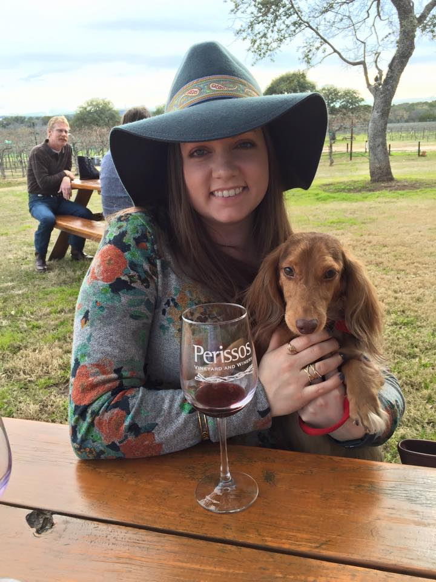

Most Recent Posts
Stag’s Leap Wine Cellars Cabernet Sauvignon
March 22, 2017

This week was an interesting one. It was also an out of the box week, as I will call it from here on out. That means this wine did not come from my wine subscription box, but instead, was a wine that I went out and purchased on my own...
Mont Gravet Carignan
March 10, 2017

This week I pulled out the Mont Gravet Carignan from my Wine Awesomeness box. I wanted to try it first because the musical selection for this wine was, “You and I” by Ingrid Michaelson. I love me some Ingrid, so I was excited to try this wine. The Carignan was a 2015 vintage from Pays d’Herault, France. I sampled this wine on January 27, 2017, and noted it’s beautiful Red color. I had not had much experience with French wines so I was quite intrigued by it...
The Start of a Journey
March 1, 2017
With this first post, I want to officially begin my journey through the world of wine. While I’ve had an interest in wine for some time now, I would like to change direction and really start delving into what makes wine the most interesting and captivating drink throughout every society. There are not many things in this world that have the power to unite, divide, delight, or disappoint people. And wine has this magical ability across the globe. From California to Siberia, wine enriches so many lives. It is absolutely fascinating.
I technically started my journey with wine...
About Me

My name is Shandelle and I am a lover of all things wine. I am based in Dallas with my husband and our two mini longhaired dachshunds...
Follow me


Labels